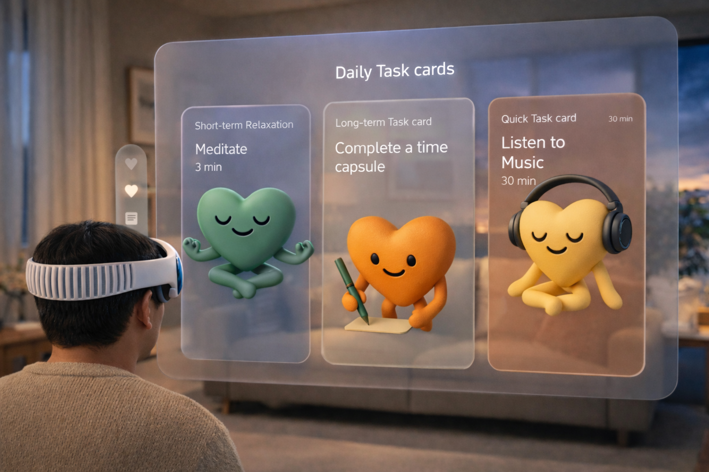

Chewverse
An AI dining companion concept designed to make short solo meals feel lighter, more personal, and emotionally engaging.
Problem Definition
Work has never been more demanding, and mental health has become a critical concern for employees and employers alike. Today’s AI‑powered chat assistants can answer questions but often lack the empathy, nuance and sensory richness needed for true emotional relief. Workers approaching burnout may not feel comfortable sharing sensitive feelings with a text bot, and audio‑only meditation apps may not provide enough immersion to reset.
Clear asks: what if we could step into a space that senses how we feel, responds gently and gives us room to breathe? The project started with interviews and diary studies to understand the tension between productivity and wellbeing; this informed a hypothesis that combining VR environments with emotion‑aware interaction could unlock a new class of wellness product.

Market & Technology Insight
Immersive wellness tools are part of a rapidly growing market. Analysts project that the spiritual tech and wellness sector—spanning meditation apps, mindfulness devices, virtual reality experiences and biofeedback systems—will continue to expand significantly as mental health becomes a priority. This growth is driven by a desire for accessible, effective solutions that promote overall well‑being.
Within this space, audio‑first apps such as Calm and Headspace dominate mainstream meditation but rely on screen‑based guidance. Tripp, a VR wellness platform, uses generative art and gamified meditation; it emphasises assessment and customisation for users but still treats people as a generalised persona. Clear builds on these precedents by exploring emotion‑aware interaction and deeper personalisation.
Advances in spatial computing make this exploration possible. Apple Vision Pro’s ultra‑high‑resolution micro‑OLED displays and dedicated processing chips work together with twelve cameras, five sensors and six microphones to blend real and virtual worlds fluidly. External sensors map the room and track your hands, while internal cameras follow your eye movements for precise interaction. Having participated in Today at Apple – Student Developers gave me early exposure to visionOS and inspired much of this concept.
Product Goal & Success Metrics
Our goal is to investigate whether an emotionally aware, immersive environment can provide deeper and more restorative relief than conventional chat‑based support tools. To guide early prototyping and learning we defined directional metrics instead of fixed KPIs:
Core Features & Prioritization
Emotion‑Aware Detection
Detect the user’s emotional state through facial expressions, behavioural cues and optional biometric signals. Clear uses this data to choose environments and adjust pacing, creating a sense of being understood without forcing the user to articulate how they feel.
Strategically this anchors Clear’s value in personalisation, differentiating it from generic meditation apps. The trade‑off lies in sensor accuracy and privacy; emotion detection must be optional and processed on device to maintain trust.
Interactive Healing Environments
Create a library of immersive spaces—misty forests, ocean sunrises, calming natural settings—where users can gently interact with the world. Simple gestures like touching leaves, following light or watching animals encourage grounding rather than gamification.
These environments translate abstract relief into tangible experience and are the heart of Clear. To deliver them at scale we must balance high visual quality with performance, ensuring comfort on current and future headsets.
Personalized Story Paths
Adapt scenes and narrative progression based on the user’s emotional history and usage patterns. Over time, Clear learns which environments resonate and weaves them into a gently evolving story that deepens retention and perceived care.
This feature fosters long‑term engagement and positions Clear as a companion rather than a tool. It increases technical complexity and requires careful testing to avoid uncanny or inappropriate responses.
Product Roadmap
MVP / Q4 2025
- Build core calming environments with high fidelity.
- Prototype emotion‑aware response logic using facial and behavioural cues.
- Test with ≈20 users and gather feedback with a psychological consultant.
- Identify UX friction and comfort issues such as motion sickness or device fatigue.
Mid Term / 2026
- Enhance AI responsiveness and personalisation; integrate mood journaling.
- Explore lighter‑weight mobile AR or companion experiences to reduce barriers to entry.
- Pursue content partnerships (music therapy, guided journaling) to diversify offerings.
- Evaluate adoption metrics and refine pricing and distribution strategy.
Long Term / 2026+
- Expand Clear into an emotional journaling and health management ecosystem.
- Partner with healthcare and wellness institutions for validation and distribution.
- Investigate B2B or subscription models via employee wellness programmes.
- Contribute research to define ethical standards for emotion‑aware VR.
Implementation Considerations, Risks & Privacy
- Sensor accuracy: emotional detection algorithms may misinterpret expressions; calibrating for different face shapes and cultures is critical.
- Performance & overheating: immersive environments demand high fidelity; we must optimise assets to prevent hardware strain and maintain comfort.
- Motion sickness & comfort: session length, pacing and locomotion need careful design to avoid nausea and encourage relaxation.
- Visual quality vs. technical performance: delivering cinematic visuals without compromising frame rate requires thoughtful art direction and engineering.
- Privacy & ethics: emotional data should be processed on device whenever possible. Only aggregate insights are stored, and user consent must be explicit. Collaboration with psychological consultants and adherence to ethical guidelines are non‑negotiable.
Reflection & Strategic Next Step
Thinking through Clear pushed me beyond interface design into the realm of product strategy. Translating intangible feelings into concrete interactions required empathy, experimentation and respect for the limits of current technology. Balancing aesthetic delight with technical feasibility and user trust highlighted the complexity of building immersive wellness products.
I learned that VR and AI are not silver bullets but powerful tools when grounded in clear human needs and ethical principles. This exploration strengthened my interest in AI‑enabled immersive product strategy and underscored why a holistic view of design, business and technology matters.
For Acer, understanding how to deliver value within the next generation of devices is essential. Future hardware will rely on AI‑driven, spatial experiences; by exploring emotion‑aware VR now, we prepare for that landscape. If I were to continue Clear, I would validate the MVP with real users, refine emotion detection models and explore collaborative wellness features that transform Clear from a solitary retreat into part of a healthy daily routine.